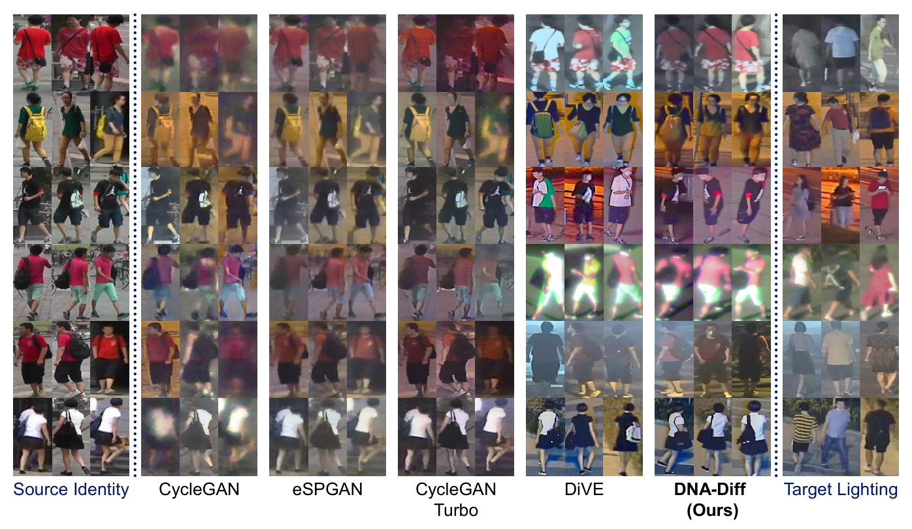
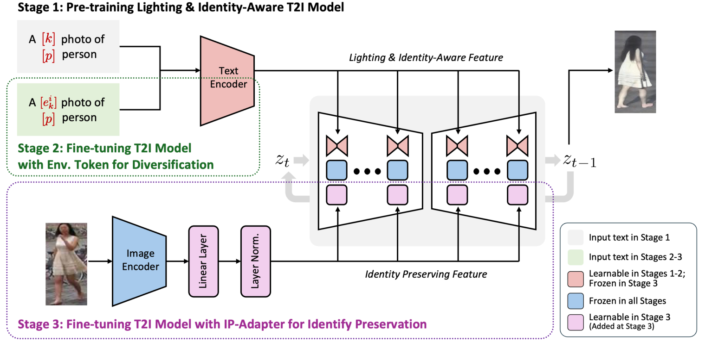
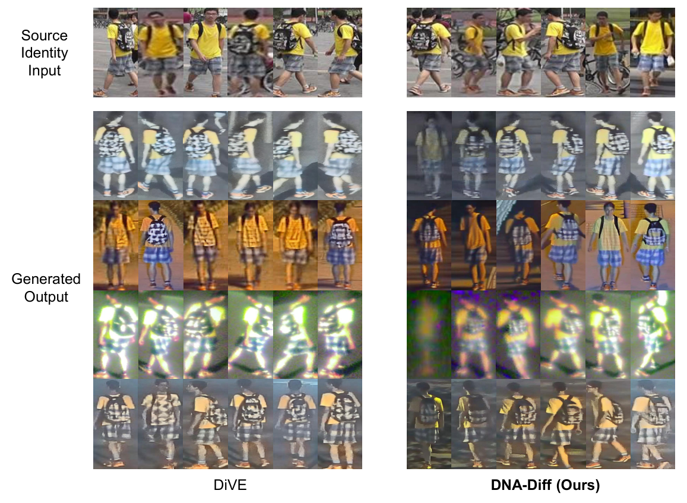
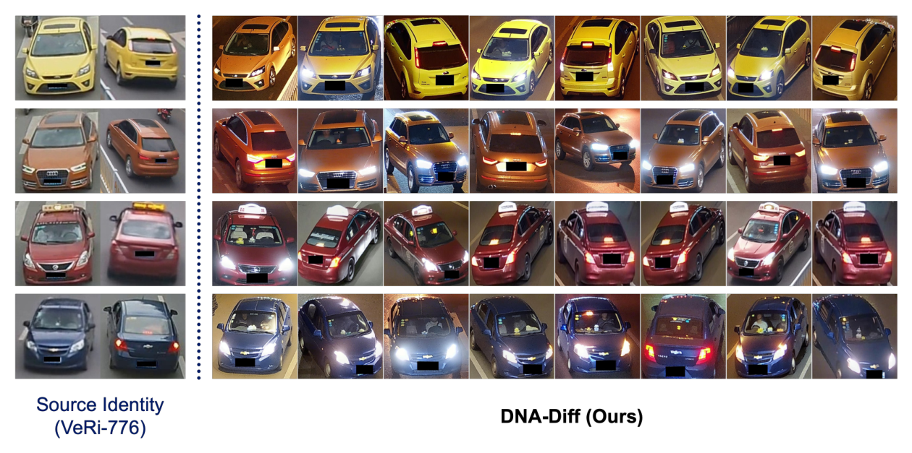

Abstract
Night-time ReID data, from daytime labels
Person re-identification collapses at night: annotated data is overwhelmingly daytime, while deployment is not. DNA-Diff closes that gap by turning labelled daytime ReID data into realistic night-time training images — no paired day/night captures required.
We fine-tune Stable Diffusion v1.5 in three stages so that it can render a given identity, taken from a daytime reference crop, under a specific night-time camera and a specific lighting condition. Learned environment tokens — one per lighting group per camera — give control over illumination, while an IP-Adapter conditioned on OSNet identity features carries appearance over from the reference image rather than from a text token alone. The result is synthetic night-time data that keeps identity intact across the full range of real low-light conditions, and that can be dropped straight into an existing ReID training split.
Qualitative Results
Identity preserved, lighting transferred
Market-1501 identities rendered under NightReID lighting, against GAN- and diffusion-based day-to-night baselines. Prior methods either wash out the illumination or drift away from the source identity; DNA-Diff holds both.

Click any figure to enlarge
Method
Three stages, each named for what it adds
Lighting- & identity-aware base
LoRA on the UNet plus a textual-inversion token per identity and per camera, so the model learns both who is in the frame and which camera it came from.
Environment tokens
One learned token per lighting group per camera. Night-time crops are sorted by brightness into ten environment groups per camera, giving explicit, dial-able illumination control.
IP-Adapter identity
Cross-attention conditioned on OSNet identity features, so appearance is carried over from a reference image instead of only from a text token.

Identity- and lighting-aware pre-training
LoRA on the UNet plus a textual-inversion token per identity and per camera.
Data_Generation/train_t2i_ila.py → finetune_stage1_ila/
Environment tokens for lighting diversity
One learned token per lighting group per camera, initialised from the stage-1 weights.
Data_Generation/train_t2i_envtoken.py → finetune_stage2_envtoken/
Identity preservation from a reference image
IP-Adapter conditioning on OSNet identity features, adapted in lora_ipadapter.py.
Data_Generation/train_t2i_ipadapter.py → finetune_stage3_ipadapter/
At inference, generate_t2i.py takes daytime Market-1501
crops as identity references and generates night-time images for every camera / environment
combination, which can then be flattened into Market-1501 filename conventions and copied straight
into a NightReID training split.
Illumination Diversity
One identity, every lighting condition
Because lighting is controlled by a discrete token rather than entangled with identity, a single source identity can be re-rendered across the full span of learned night-time environments — from near-dark to harsh streetlight glare — without the appearance collapsing into a single averaged look.

Generalisation
Beyond people: vehicle re-identification
The method is not specific to pedestrians. Applied to VeRi-776, the same recipe renders a source vehicle under night-time traffic lighting — headlights, tail-lights, sodium-lamp colour casts — while preserving make, colour and viewpoint cues.

Get Started
Generate in three steps
You do not need to train anything. Released weights cover all three stages — pull them, point the sampler at your daytime reference crops, and generate. The full training recipe, data preparation and troubleshooting live in the repository README.
# diffusers is pinned to 0.23.1 — later # releases relocate the LoRA attn processors git clone https://github.com/manhtoanbui01/DNA-Diff.git cd DNA-Diff conda env create -f environment.yml conda activate dna-diff
# Stable Diffusion v1.5 (scripts run --local_files_only) huggingface-cli download \ stable-diffusion-v1-5/stable-diffusion-v1-5 \ --local-dir ./stable-diffusion-v1-5 # released DNA-Diff weights (1.86 GB) cd dataset/NightReID_Market1501/ wget https://huggingface.co/manhtoanbui01/DNA-Diff/resolve/main/finetune_model.tar.gz tar -xzf finetune_model.tar.gz
cd Data_Generation source scripts/sample.sh sample \ /abs/path/to/dataset/NightReID_Market1501/ \ /abs/path/to/dataset/NightReID_Market1501/cam7/env61/ \ /abs/path/to/stable-diffusion-v1-5 \ /abs/path/to/output_dir \ 10 512 true # ^^^^ use_pretrained_weights
Pass true as the 7th argument when using the released weights —
it selects the per-camera token counts those weights were trained with. Use
false for weights you trained yourself.
Don't want to run generation at all? The
generated
images (260 MB) are released too — export them into a Market-1501-style training split with
move_synthetic_market1501.py and train your ReID model directly.
What ships with the release
| Artefact | Size | What it is |
|---|---|---|
learned_embeds-steps-100000.bin | 6.2 MB | Identity token embeddings (stage 1) |
learned_embeds-steps-40000.bin | 540 KB | Environment / lighting token embeddings (stage 2) |
model.safetensors | 171 MB | UNet LoRA + IP-Adapter attention (stage 3) |
model_1.safetensors | 6.1 MB | OSNet → IP-Adapter projection (stage 3) |
generated_images.tar.gz | 260 MB | Pre-generated synthetic night-time dataset |
Inference also needs the base SD-1.5 checkpoint and the
osnet_ain_x1_0 (MS+D+M→C) ReID backbone. Requirements: Linux x86_64, an NVIDIA GPU
with a CUDA 12.1-capable driver, and roughly 80 GB of free disk for data, checkpoints and output.
Citation
BibTeX
@inproceedings{dnadiff2026,
title = {Lighting-Aware Diffusion-based Data Augmentation
for Robust Low-Light Re-Identification},
author = {Bui, Toan Manh and Min, Donghyeok and
Oh, Inyoung and Cho, Junghyun},
booktitle = {British Machine Vision Conference (BMVC)},
year = {2026}
}
Acknowledgements
Built on open source
- DiVE — the codebase this implementation builds on, and the main baseline above
- Stable Diffusion v1.5 and diffusers — the text-to-image backbone
- deep-person-reid — OSNet identity features
- IP-Adapter — image-prompt cross-attention
- NightReID, Market-1501 and VeRi-776 — datasets